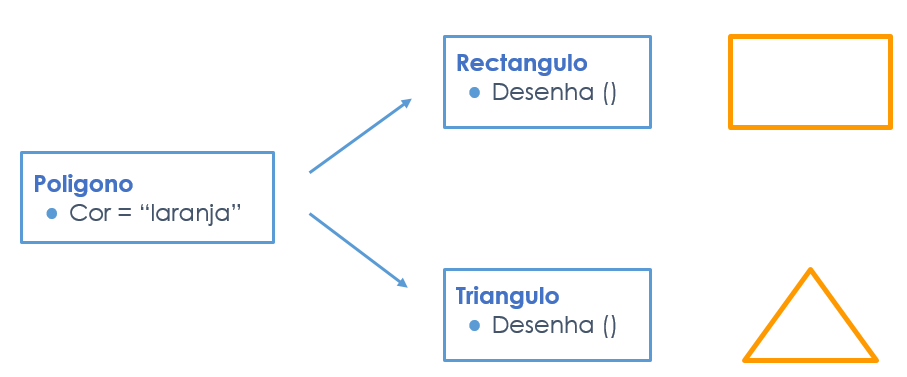
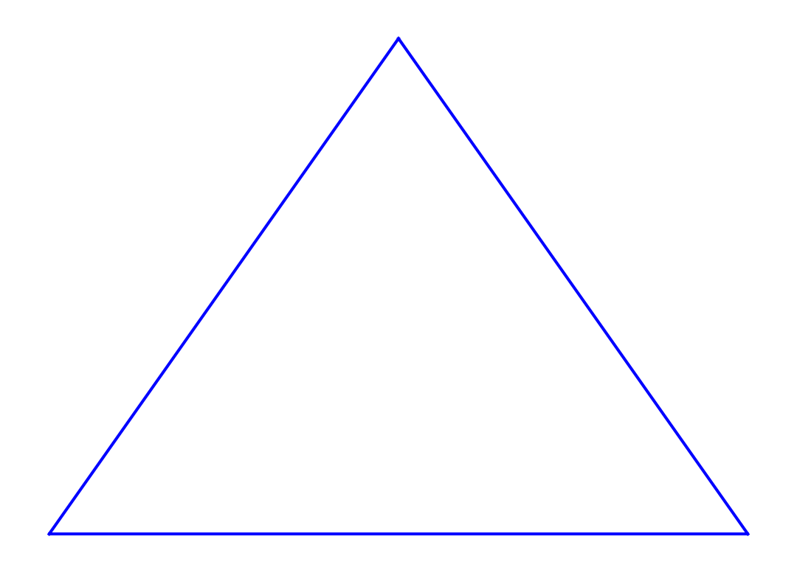
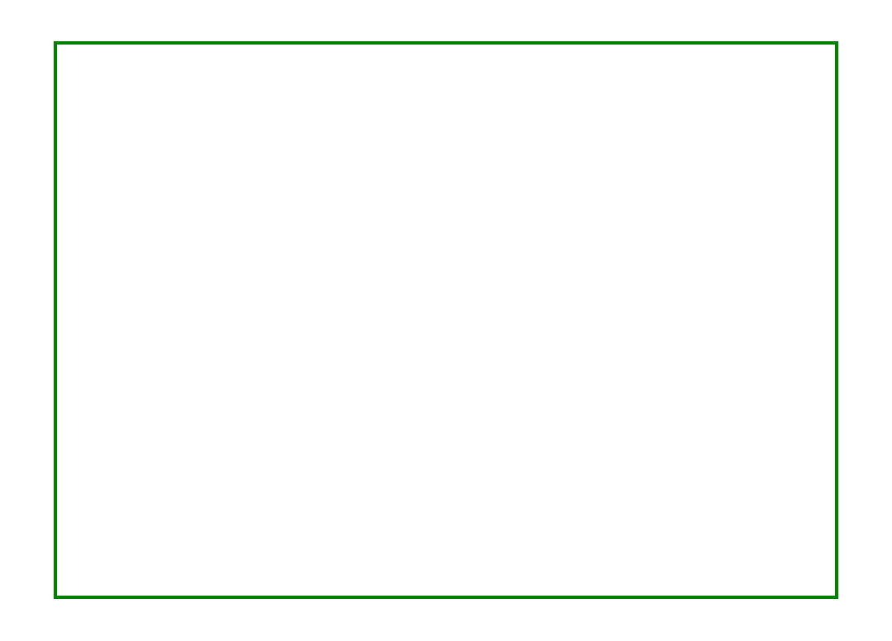
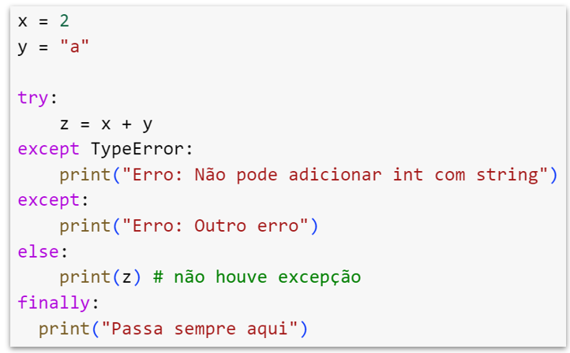

class pai:
# código do pai
pass
class filho(pai):
# código do filho
pass7 Programming Techniques (Advanced)
Conteúdos
Conceitos de Classe, Programação recursiva, RegExp.
7.1 Classes
7.1.1 Herança
 Classes são modelos para criar objetos. A herança é um mecanismo que permite a uma classe herdar atributos e métodos de outra classe.
Classes são modelos para criar objetos. A herança é um mecanismo que permite a uma classe herdar atributos e métodos de outra classe.
- Herança simples
class Pessoa(object):
def __init__(self, nome):
self._nome = nome
@property
def nome(self):
return self._nome
@nome.setter
def nome(self, novo_nome):
self._nome = novo_nomefrom dataclasses import dataclass
@dataclass
class Empregado(Pessoa):
num_funcionario: int
def __init__(self, nome, num_funcionario):
Pessoa.__init__(self, nome)
self.num_funcionario = num_funcionario
# ou
#super().__init__(nome) # construtor da classe paicidadao = Pessoa("Carla")
funcionario = Empregado("Pedro", 950)
print(f'A {cidadao.nome} é uma Pessoa')
print(f'O {funcionario.nome} é um Funcionário com número de funcionário {funcionario.num_funcionario}.')A Carla é uma Pessoa
O Pedro é um Funcionário com número de funcionário 950.- Herança múltipla
class Aviao:
def sabe_voar(self):
print("Sei voar")
class Barco:
def sabe_navegar(self):
print("Sei navegar")
class Hidroviao(Aviao, Barco):
pass
_ = Hidroviao()
_.sabe_navegar()
_.sabe_voar()Sei navegar
Sei voarProblema Diamond
class A:
def display(self):
print("Class A")
class X(A):
def display(self):
print("Class X")
class Y(A):
def display(self):
print("Class Y")
class Z(X, Y):
pass
obj = Z()
obj.display()Class X# @title Saber a MRO de uma classe
#print(Z.mro())
print(Z.__mro__)(<class '__main__.Z'>, <class '__main__.X'>, <class '__main__.Y'>, <class '__main__.A'>, <class 'object'>)- Herança multi-nível
from dataclasses import dataclass
@dataclass
class Pessoa:
nome: str
@dataclass
class Atleta (Pessoa):
clube: str
@dataclass
class Futebolista(Atleta):
posicao: str
pele = Futebolista("Pelé", "Santos", "Avançado")
print(pele)Futebolista(nome='Pelé', clube='Santos', posicao='Avançado')Esconder atributos
class Utilizador:
def __init__(self, meu_username, meu_password):
self._username = meu_username # protected: começa por _ (unerscore)
self.__password = meu_password # private: começa por __ (duplo underscore)
self.__gerar_id()
def __gerar_id(self): # private
from random import randint
self.id = randint(1, 99999)
class Cliente(Utilizador):
def __init__(self, cliente_username, cliente_password, data_de_entrada):
self.data_registo = data_de_entrada # public
Utilizador.__init__(self, cliente_username, cliente_password)
cliente1 = Cliente('telma', 'xyzpass', '2020-10-16')
print(cliente1._username)
print(cliente1.data_registo)
#print(cliente1.__password)
#cliente1.__gerar_id()
print(cliente1.id)telma
2020-10-16
52537print(cliente1._Utilizador__password) # privado mas com transparẽncia
print(cliente1.id)
cliente1._Utilizador__gerar_id() # privado mas com transparẽncia
print(cliente1.id)xyzpass
52537
15535- Herança híbrida: quando se misturam vários tipos de herança;
- Hernça hierárquica: várias classes herdam duma classe comum.
7.1.2 Polimorfismo

7.1.2.1 Funções polimórficas
# @title Python built-in
# len() para string
print(len("palavra"))
# len() para lista
print(len([10, 20, 30]))7
3# @title User Defined Function
def soma(a,b,c=0):
return a+b+c
print(soma(2,3))
print(soma(2,3,4))5
9from dataclasses import dataclass
@dataclass
class Poligono:
nome: str
cor: str
class Triangulo(Poligono):
def __init__(self, cor_do_triangulo):
super().__init__("triangulo",cor_do_triangulo)
def desenha(self):
import matplotlib.pyplot as plt
# Draw a triangle
plt.plot([0, 1], [0, 0], self.cor)
plt.plot([1, 0.5], [0, 0.5], self.cor)
plt.plot([0.5, 0], [0.5, 0], self.cor)
plt.axis('off')
plt.show()
class Rectangulo(Poligono):
def __init__(self,cor_do_rectangulo):
super().__init__( "rectangulo",cor_do_rectangulo)
def desenha(self):
import matplotlib.pyplot as plt
# Draw a rectangle
plt.plot([4, 6], [0, 0], self.cor)
plt.plot([6, 6], [0, 1], self.cor)
plt.plot([6, 4], [1, 1], self.cor)
plt.plot([4, 4], [1, 0], self.cor)
plt.axis('off')
plt.show()t = Triangulo('b')
r = Rectangulo('g')
# 'b' as blue
# 'g' as green
# 'r' as red
# 'c' as cyan
# 'm' as magenta
# 'y' as yellow
# 'k' as black
# 'w' as white
for poligono in (t,r):
print(poligono.nome)
poligono.desenha()triangulo
rectangulo
7.1.2.2 Exercícios
# @title Exercício (copy/paste)
class Classe1():
s = "Bom"
class Classe2:
s = "trabalho"
class Classe3(Classe1, Classe2):
def __init__(self):
# imprime Bom trabalho
print(Classe1.s, Classe2.s)
_ = Classe3()Bom trabalhona herança multipla uma classe que herda mais do que uma classe
7.2 Sequências e Conjuntos

7.2.1 Tuplos
coleção ordenada; imutável; heterogénea; indexada a zero [0]; permite duplicados.
estacoes = ("Primavera", "Verão", "Outono", "Inverno")
# outra forma, a partir do Python 3.11
values : tuple[int | str, ...] = (1,2,4,"palavra")
# túplo que aceita string ou int e pode ter vários de cadasó com um elemento
tuplo = ("sozinho",) # acaba com uma vírgula
print(type(tuplo))
#NOT a tuple
nao_tuplo = ("só")
print(type(nao_tuplo))<class 'tuple'>
<class 'str'>usando um construtor
t = tuple(["baixo", "médio", "alto"])
print(t)('baixo', 'médio', 'alto')aceder a um elemento do tuplo
t = tuple(("baixo", "médio", "alto"))
print(t[1])
print(t[-1])médio
altooperações com tuplos
# @title Concatenar
t1 = ("a", "b")
t2 = (1, 2)
t3 = t1 + t2
t3
# @title Nesting
t1 = ("a", "b")
t2 = (1, 2)
t3 = (t1, t2)
t3
# @title Repetição
t1 = ("a", "b")
t2 = t1 * 3
t2
# @title Slicing
t1 = (0 ,1, 2, 3)
print(t1[1:])
print(t1[::-1])
print(t1[2:4])
# @title Número de elemtentos
t1 = ("a", "c", "c")
len(t1)
# @title Apagar túplo
t1 = (1,)
del t1
#### Converter Lista em Túplo
lista = [1, 2, 3, 4]
tuplo = tuple(lista)
tuplo
# @title Converter String em Túplo
s = "abcd"
t = tuple(s)
t(1, 2, 3)
(3, 2, 1, 0)
(2, 3)('a', 'b', 'c', 'd')iterar um tuplo
t1 = ("a", 1, True, "b")
for i in t1:
print(type(i))<class 'str'>
<class 'int'>
<class 'bool'>
<class 'str'>7.2.2 Sets
coleção não ordenada; mutável; sem duplicados; pode ser iterada; sintaxe: entre chavetas { } e separado por vírgulas.
conjunto = {"tangerina", "papaia", "melão"}
conjunto = set(["tangerina", "papaia", "melão"])
conjunto{'melão', 'papaia', 'tangerina'}# @title Conjunto vazio
set1 = set()
print("Conjunto vazio")
print(set1)
# @title Set a partir de uma String
set1 = set("palavra")
print(set1)
outra_string = "outra palavra"
set1 = set(outra_string)
print(set1)
# @title Set a partir de uma lista
set1 = set(["a", "b", "c"])
print(set1)
# @title Set a partir de um tuplo
t = ("um","dois","três")
print(set(t))
# @title Set a partir de um dicionário
d={"Sim":"yes", "Não":"No", "Talvez":"Maybe"}
print(set(d))Conjunto vazio
set()
{'r', 'v', 'l', 'p', 'a'}
{'t', 'r', 'u', 'v', 'l', 'p', 'o', 'a', ' '}
{'a', 'c', 'b'}
{'um', 'três', 'dois'}
{'Não', 'Sim', 'Talvez'}adicionar um elemento a um conjunto
s = {1, 2}
s.add(3)
s{1, 2, 3}adicionar vários elementos a um conjunto
s = {1, 2}
novos_elementos=[3, 4, 5] # não tem de ser uma lista
s.update(novos_elementos)
s{1, 2, 3, 4, 5}aceder a elementos
como não há ordem não se pode aceder a elementos de um conjunto via indice
set1 = set(["a", "b", "c"])
for elemento in set1:
print(elemento, end=" ")a c b verificar se um elemento existe num conjunto
set1 = set(["a", "b", "c"])
print("b" in set1)Trueremover um elemento de um conjunto
s = {1, 2, 3}
s.remove(2)
#s.remove(4) # daria erro
s.discard(4) # não dá se o elemento não existir
s{1, 3}remover todos os elementos de um conjunto
s = {9, 8, 7}
s.clear()
sset()remover sem saber o quê
s = {2, 1, 3, 4, 5}
removi = s.pop()
print(removi)
s1{2, 3, 4, 5}Frozensets: conjunto imutável
frz=frozenset({1, 2, 3})
frzfrozenset({1, 2, 3})converter em set (type casting)
# @title list
lista = [1, 2, 3, 3, 4, 5, 5, 6, 2]
conjunto = set(lista)
conjunto{1, 2, 3, 4, 5, 6}# @title string
s = "Palavra"
conjunto = set(s)
conjunto
# @title dictionary
d = {1: "Um", 2: "Dois", 3: "Três"}
conjunto = set(d)
conjunto{1, 2, 3}Operações de conjuntos
# @title Unir
s1 = {1, 2}
s2 = {3, 4, 5}
s3 = s1.union(s2)
s3
# @title Intersecção
s1 = {1, 2, 3, 4, 5}
s2 = {4, 5, 6, 7, 8}
s3 = s1.intersection(s2)
s3
# @title Diferença
s1 = {1, 2, 3, 4, 5}
s2 = {4, 5, 6, 7, 8}
# pertence a s1 e não pertence a s2
s3 = s1.difference(s2)
s3
# @title diferença simétrica
s1 = {1, 2, 3, 4, 5}
s2 = {4, 5, 6, 7, 8}
# elementos dos dois conjuntos que não são comuns
s3 = s1.symmetric_difference(s2)
s3
# @title Verifica se é subconjunto
s1 = {1, 2, 3, 4, 5}
s2 = {2, 3, 4}
print(s2.issubset(s1))
# @title Verifica se é um superset
s1 = {1, 2, 4, 5}
s2 = {2, 3, 4}
print(s1.issuperset(s2))True
False7.3 module collections
- Counters
- OrderedDict
- Defaultdict
- ChainMap
- NamedTuple
- DeQue
- UserDict
- UserList
- UserString
# @title Criar counters
from collections import Counter
# sequencia de items
print(Counter(['B','B','A','B','C','A','B','B','A','C']))
# dictionary
print(Counter({'A':3, 'B':5, 'C':2}))
# keyword arguments
print(Counter(A=3, B=5, C=2))
# @title Actualizar counters
coun = Counter()
coun.update([1, 2, 3, 1, 2, 1, 1, 2])
print(coun)
coun.update([1, 2, 4])
print(coun)
# @title Subtrair counters
# Python program to demonstrate that counts in
# Counter can be 0 and negative
c1 = Counter(A=4, B=3, C=10, J=40)
c2 = Counter(A=10, B=3, C=4, D=5)
c1.subtract(c2)
print(c1)
# @title Distinct count numa lista
z = ['chá', 'café', 'chá', 'vinho', 'água', 'chá', 'café']
# Quantos elementos únicos existem na lista, e quantas unidade e cada elemento?
print(Counter(z))
# @title imprimir valores do counter
c = Counter('abracadabra')
print(c.keys())
print(c.values())
print(c.items())Counter({'B': 5, 'A': 3, 'C': 2})
Counter({'B': 5, 'A': 3, 'C': 2})
Counter({'B': 5, 'A': 3, 'C': 2})
Counter({1: 4, 2: 3, 3: 1})
Counter({1: 5, 2: 4, 3: 1, 4: 1})
Counter({'J': 40, 'C': 6, 'B': 0, 'D': -5, 'A': -6})
Counter({'chá': 3, 'café': 2, 'vinho': 1, 'água': 1})
dict_keys(['a', 'b', 'r', 'c', 'd'])
dict_values([5, 2, 2, 1, 1])
dict_items([('a', 5), ('b', 2), ('r', 2), ('c', 1), ('d', 1)])orderedDict subclasse de dicionário que mantém a ordem de inserção dos elementos
from collections import OrderedDict
print("Dicionário:\n")
d = {}
d['a'] = 1
d['b'] = 2
d['c'] = 3
d['d'] = 4
# remover e inserir
d.pop('a')
d['a'] = 1
# alterar o valor
d['c'] = 5
for key, value in d.items():
print(key, value)
print("\nOrdered Dict:\n")
od = OrderedDict()
od['a'] = 1
od['b'] = 2
od['c'] = 3
od['d'] = 4
# remover e inserir
od.pop('a')
od['a'] = 1
# alterar o valor
od['c'] = 5
for key, value in od.items():
print(key, value)Dicionário:
b 2
c 5
d 4
a 1
Ordered Dict:
b 2
c 5
d 4
a 1defaultDict: subclasse de dicionário que permite definir um valor padrão para chaves inexistentes
from collections import defaultdict
def default_e_5():
return 5
d = defaultdict(int)
# O valor por omissão (default value) é 0
print(d[15])
d2 = defaultdict(default_e_5)
print(d2[15])
d = defaultdict(int)
dicionario_normal={}
L = [1, 2, 3, 4, 2, 4, 1, 2]
for i in L:
# O valor por omissão (default value) é 0
# por isso não é necessário inserir a chave primeiro
d[i*2] += 1
#dicionario_normal[i*2] += 1
print(d)
# outro exmplo
d = defaultdict(list)
for i in range(5):
d[i].append(i)
print(d)0
5
defaultdict(<class 'int'>, {2: 2, 4: 3, 6: 1, 8: 2})
defaultdict(<class 'list'>, {0: [0], 1: [1], 2: [2], 3: [3], 4: [4]})chainMap: permite juntar vários dicionários numa única estrutura e devolve uma lista de dicionários
from collections import ChainMap
d1 = {'a': 1, 'b': 2}
d2 = {'c': 3, 'd': 4}
d3 = {'e': 5, 'f': 6}
# Defining the chainmap
juntos = ChainMap(d1, d2, d3)
print(juntos)
print(juntos['a'], juntos['f'])ChainMap({'a': 1, 'b': 2}, {'c': 3, 'd': 4}, {'e': 5, 'f': 6})
1 6namedTuple: permite criar tuplos nomeados. Pode ser visto como uma formaleve de criar uma lista
from collections import namedtuple
# namedtuple()
Estudante = namedtuple('Estudante', ['nome', 'curso', 'data_nascimento'])
# Adicionar valor
s = Estudante('Mónica', 'Filosofia', '25-12-1997')
# Aceder via index
print(f"O curso é {s[1]}")
# Aceder via nome
print(f"O nome é {s.nome} ")
print(s)O curso é Filosofia
O nome é Mónica
Estudante(nome='Mónica', curso='Filosofia', data_nascimento='25-12-1997')deQue: é uma lista de dupla extremidade (double-ended queue)
from collections import deque
dq = deque([3, 4, 5])
print(dq)
dq.append(6)
print(dq)
dq.appendleft(9)
print(dq)
dq.pop()
print(dq)
dq.popleft()
print(dq)deque([3, 4, 5])
deque([3, 4, 5, 6])
deque([9, 3, 4, 5, 6])
deque([9, 3, 4, 5])
deque([3, 4, 5])userDict, userList, userString: são subclasses de dicionário, lista e string, respetivamente com funcionalidades especificas
# title userDict
from collections import UserDict
# Dicionário que não permite apagar elementos
class MeuDict(UserDict):
# Função para impedir apagar do dicionário
def __del__(self):
raise RuntimeError("Não é permitido apagar (del)")
# Função para impedir pop() do dicionário
def pop(self, s = None):
raise RuntimeError("Não é permitido apagar (pop)")
# Função para impedir popitem() do dicionário
def popitem(self, s = None):
raise RuntimeError("Não é permitido apagar (popitem)")
d = MeuDict({'a':1, 'b': 2, 'c': 3})
#d.pop(1)
# @title UserList
from collections import UserList
# Lista que não permite apagar
class MinhaLista(UserList):
# Função para impedir apagar da lista
def remove(self, s = None):
raise RuntimeError("Não é permitido apagar (remove)")
# Função para impedir apagar pop() da lista
def pop(self, s = None):
raise RuntimeError("Não é permitido apagar (pop)")
L = MinhaLista([1, 2, 3, 4])
L.append(5)
print(L)
#L.remove()
# @title UserString
from collections import UserString
# String mutável
class MutableString(UserString):
# Função para adicionar a uma stirng
def append(self, s):
self.data += s
# Função para remover de uma string
def remove(self, s):
self.data = self.data.replace(s, "")
s1 = MutableString("Palavra")
print("String original:", s1.data)
# Adicionar
s1.append("s")
print("Após adicionar:", s1.data)
# Remover
s1.remove("vra")
print("Após remover:", s1.data)[1, 2, 3, 4, 5]
String original: Palavra
Após adicionar: Palavras
Após remover: Palas7.4 Programação Recursiva
um processo que se chama a si mesmo directa ou indirectamente para computar o seu resultado.
# @title Successor
def suc(n):
if n == 0:
return 1
else:
return 1 + suc(n-1)
print(suc(4))
# @title Factorial
def factorial(num):
if num == 1:
return num
else:
return num * factorial(num - 1)
print(factorial(4))5
247.4.1 Exercícios
# # fazer função get_comuns que recebe 3 listas e devolve uma lista com os elementos comuns às 3 listas
# def get_comuns(l1, l2, l3[]):
# s1 = set(l1)
# s2 = set(l2)
#
# comuns = s1.intersection(s2, s3)
#
# if len(3)>0:
# s3 = set(l3)
# comuns = comuns.intersection(s3)
#
# return list(comuns)# fazer função um_to_n que recebe um número n e devolve a sequencia de 1 a n
def um_to_n(n):
if n == 1:
return [1]
else:
return um_to_n(n-1) + [n]
um_to_n(4)[1, 2, 3, 4]7.5 Expressões Regulares
import re
s="Um grande dia para falar de expressões regulares"
match=re.search(r"falar", s)
print(match.start(), match.end())19 24meta caracteres:
\- Caracter de escape, remove o a funcionalidade especial do carcater que está a seguir[]- Representa uma classe de caracteres^- Faz match com o início$- Faz match com o fim.- Faz match com qualquer caracter excepto o “newline”|- Significa “OR”. Faz match com qualquer dos caracteres separados pelo símbolo?- Faz match com zero ou mais ocorrências*- Faz match com qualquer número de ocorrências (incluindo 0 ocorrências)+- Uma ou mais ocorrências{}- Indica o número de ocorrências que a expressão imediatamente anterior tem de fazer match()- Representa um grupo da expressão regular
Operações
import re
print(re.search(r"9+","289908")) # produra os 9's
print(re.search(r"\d{3}","abc1234de"))
# primeiro conjunto de letras
print(re.match(r"\w+","são 13 horas?")) #
x=re.match(r"\w+","são 13 horas?")
# primeiro simbolo que é não letra
print(re.search(r"\W","São 13 horas?"))
print(re.search(r"x*e+","abxcdxxxefxghxx")) # x seguido de zero ou mais e seguido de um ou mais e
print(re.findall(r"xx+","abxcdxxxefxghxx")) # x seguido de um ou mais x
print(re.search(r"[ine]","ana")) # procura i, n ou e
# @title group
m = re.match(r"(\w+) (\w+)", "Instituto Nacional de Estatística")
m.group(0) # O match completo
#'Instituto Nacional'
m.group(1) # O 1º subgroupo entre parentises.
#'Instituto'
m.group(2) # O 2º subgroupo entre parentises
#'Nacional'
m.group(2, 1) # Vários argumentos, devolve-nos um tuplo
#('Nacional','Instituto')
#m.groups()
# @title group() e groups()
resultado = (re.search(r"(?:AB)","ACABC"))
print(resultado)
print(resultado.groups()) # todos os grupos a partir do grupo 1
print(resultado.group())
#print(resultado.group(0))
resultado = re.search(r"(\w*), (\D*), (\w*)","espinafres, 12, combóio, ?, falange")
print(resultado.groups())
print(resultado.group())
resultado = (re.search(r"(?:AB)","acabc"))
print(resultado)
resultado = (re.search(r"(?:AB)","acabc", flags=re.IGNORECASE))
print(resultado)
resultado = (re.search(r"(?i:AB)","acabc"))
print(resultado)
partes = re.split(r'\.', '127.0.0.1', maxsplit=5)
print(partes)
# @title validar
valid = re.compile(r"^[a2-9tjqk]{5}$")
match = valid.match("akt5q") # Válido
print(match.group())
match = valid.match("akt5e") # Inválido
match = valid.match("akt") # Inválido
match = valid.match("727ak") # Válido
print(match.group())
# @title backreferences
pair = re.compile(r".*(.).*\1")
print(pair.match("717ak"))
print(pair.match("717ak").group())
print(pair.match("717ak").group(1))
# @title gropudict (e named references)
m = re.match(r"(?P<codigo_postal>\d{4}-\d{3}) (?P<localidade>\w+)", "4000-064 PORTO")
m.groupdict()<re.Match object; span=(2, 4), match='99'>
<re.Match object; span=(3, 6), match='123'>
<re.Match object; span=(0, 3), match='são'>
<re.Match object; span=(3, 4), match=' '>
<re.Match object; span=(5, 9), match='xxxe'>
['xxx', 'xx']
<re.Match object; span=(1, 2), match='n'>
<re.Match object; span=(2, 4), match='AB'>
()
AB
('12', 'combóio, ?', 'falange')
12, combóio, ?, falange
None
<re.Match object; span=(2, 4), match='ab'>
<re.Match object; span=(2, 4), match='ab'>
['127', '0', '0', '1']
akt5q
727ak
<re.Match object; span=(0, 3), match='717'>
717
7{'codigo_postal': '4000-064', 'localidade': 'PORTO'}7.6 Lambda Functions
# função UDF
def cubo(y):
return y*y*y
# função lambda
lambda_cubo = lambda y: y*y*y
print("usando a UDF:", cubo(5))
print("usando a função lambda:", lambda_cubo(5))usando a UDF: 125
usando a função lambda: 125em comprehensions
multiplos_de_dez = [lambda arg=x: arg * 10 for x in range(1, 9)]
for item in multiplos_de_dez:
print(item())10
20
30
40
50
60
70
80em funções breves
Max = lambda a, b : a if(a > b) else b
print(Max(1, 2))
(lambda x: (x+3)*5*x/2)(3)245.0em filtros
li = [5, 7, 22, 97, 54, 62, 77, 23, 73, 61]
impares = list(filter(lambda x: (x % 2 != 0), li))
print(impares)[5, 7, 97, 77, 23, 73, 61]em mapeamentos
li = [5, 7, 22, 97, 54, 62, 77, 23, 73, 61]
dobro = list(map(lambda x: x*2, li))
print(dobro)[10, 14, 44, 194, 108, 124, 154, 46, 146, 122]A função reduce() aplica-se a listas e executa a mesma função a cada dois elementos da lista. aka Função acumuladora
from functools import reduce
li = [10, 5, 40]
concat = reduce(lambda x, y: str(x) + '.' + str(y), li)
print(concat)
li = [10, 20, 50]
sum = reduce((lambda x, y: x + y), li)
print(sum)10.5.40
80Immediately Invoked Function Execution
resultado = (lambda x: x + 1)(2)
print(resultado)37.7 Excepções

x = 2
y = "a"
try:
z = x + y
except TypeError:
print("Erro: Não pode adicionar int com string")
except:
print("Erro: Outro erro")
else:
print(z) # não houve excepção
finally:
print("Passa sempre aqui")Erro: Não pode adicionar int com string
Passa sempre aquicausar uma excepção
try:
raise NameError("Olá") # Raise
except NameError:
print ("Ocorreu uma excepção")
# raise # Propagar a excepção para "cima"
# @title Excepção genérica
# x = 4
# if x<10:
# raise Exception("uma excepção inventada")
# @title User defined exception
class ValorExcessivo(Exception):
pass
try :
x = 2000
if (x > 100):
raise ValorExcessivo
print("O valor é bom")
except ValorExcessivo:
print ("O valor é excessívo")Ocorreu uma excepção
O valor é excessívoboa prática usar as excepções built-in quando possível
try:
x = 2000
if (x > 100):
raise ValueError("O valor é excessívo")
print("O valor é bom")
except ValueError as e:
print(e)O valor é excessívoprocurar em Built-in exceptions
7.7.1 Exercícios
# com tratamento de excepções implementa uma função que divide x por y e em caso de zero devolve uma mensagem de erro
def divide(x, y):
try:
return x/y
except ZeroDivisionError:
return "Erro: Divisão por zero"7.8 Zen of Python
import thisThe Zen of Python, by Tim Peters
Beautiful is better than ugly.
Explicit is better than implicit.
Simple is better than complex.
Complex is better than complicated.
Flat is better than nested.
Sparse is better than dense.
Readability counts.
Special cases aren't special enough to break the rules.
Although practicality beats purity.
Errors should never pass silently.
Unless explicitly silenced.
In the face of ambiguity, refuse the temptation to guess.
There should be one-- and preferably only one --obvious way to do it.
Although that way may not be obvious at first unless you're Dutch.
Now is better than never.
Although never is often better than *right* now.
If the implementation is hard to explain, it's a bad idea.
If the implementation is easy to explain, it may be a good idea.
Namespaces are one honking great idea -- let's do more of those!7.9 Bónus
# @title Evitar nested loops
list_a = [1, 2020, 70]
list_b = [2, 4, 7, 2000]
list_c = [3, 70, 7]
# antes
for a in list_a:
for b in list_b:
for c in list_c:
if a + b + c == 2077:
print(a, b, c)
# depois
from itertools import product
for a, b, c in product(list_a, list_b, list_c):
if a + b + c == 2077:
print(a, b, c)70 2000 7
70 2000 7# @title Operador Morsa (Walrus Operator)
# antes
author = "Yang"
print(author)
# depois
print(author:="Yang")Yang
Yang# @title Operador trenário
# antes
if a<b:
min = a
else:
min = b
# depois
min = a if a < b else b# @title usar funções higher-order
# map
names = ['maTeMáTiCa', 'iNgLês', 'FísiCa', 'PORTUGUÊS']
names = map(str.capitalize, names)
print(list(names))
# reduce
from functools import reduce
lista = ['P', 'y', 't', 'h', 'o', 'n', 2, 0, 2, 3]
lista_to_str = reduce(lambda x, y: str(x) + str(y), lista)
print(lista_to_str)['Matemática', 'Inglês', 'Física', 'Português']
Python2023# @title union operator
cities_us = {'New York City': 'US', 'Los Angeles': 'US'}
cities_uk = {'London': 'UK', 'Birmingham': 'UK'}
cities = cities_us|cities_uk
print(cities)
# ainda melhor (se for o que se pretende!)
cities_us |= cities_uk
print(cities_us){'New York City': 'US', 'Los Angeles': 'US', 'London': 'UK', 'Birmingham': 'UK'}
{'New York City': 'US', 'Los Angeles': 'US', 'London': 'UK', 'Birmingham': 'UK'}# @title Usar *
A = [1, 2, 3] # lista
B = (4, 5, 6) # tuplo
C = {7, 8, 9} # conjunto
L = [*A, *B, *C]
print(L)[1, 2, 3, 4, 5, 6, 8, 9, 7]# magia com *
a, *mid, b = [1, 2, 3, 4, 5, 6] # mid é uma lista com os elementos do meio
print(a, mid, b)1 [2, 3, 4, 5] 67.10 chatGPT
7.10.1 com o github copilot
# write a lambda function in Python that receives 3 lists and returns a list with the elements common to the 3 input lists. Also write code to test the function.
get_commons = lambda l1, l2, l3: list(set(l1) & set(l2) & set(l3))
# test the function
l1 = [1, 2, 3, 4, 5]
l2 = [2, 3, 4, 5, 6]
l3 = [3, 4, 5, 6, 7]
print(get_commons(l1, l2, l3))[3, 4, 5]7.10.2 Via API
pip install openai# @title Chat
from openai import OpenAI, OpenAIError
from google.colab import userdata
try:
client = OpenAI(
api_key = userdata.get('OPENAI_APIKEY')
)
completion = client.chat.completions.create(
model="gpt-3.5-turbo",
messages=[
{"role": "system", "content": "És um poeta e um especialista em estatística. Falas português de Portugal."},
{"role": "user", "content": "Compõe um poema com 2 quadras que explique a evolução dos preços do IPC no ano de 2020 em Portugal."}
]
)
resposta = completion.choices[0].message
print(resposta.content)
except OpenAIError as e:
print("erro:", e)# @title Assistant
from openai import OpenAI
client = OpenAI(
api_key = userdata.get('OPENAI_APIKEY')
)
# 1. Criar o assistente
assistant = client.beta.assistants.create(
name="Math Tutor",
instructions="És um especialista em estatística e professor de Python. Escreve e executa código para responder às perguntas.",
tools=[{"type": "code_interpreter"}],
#model="gpt-4-turbo", caro
model="gpt-3.5-turbo",
)
# 2. Criar um historico da conversa
thread = client.beta.threads.create()
# 3. Iniciar a conversação
message = client.beta.threads.messages.create(
thread_id=thread.id,
role="user",
content="Como estimar a inflação?"
)
# 4. Executar o assistente e aguardar a resposta
from typing_extensions import override
from openai import AssistantEventHandler
# First, we create a EventHandler class to define
# how we want to handle the events in the response stream.
class EventHandler(AssistantEventHandler):
@override
def on_text_created(self, text) -> None:
print(f"\nassistente > ", end="", flush=True)
@override
def on_text_delta(self, delta, snapshot):
print(delta.value, end="", flush=True)
def on_tool_call_created(self, tool_call):
print(f"\nassistente > {tool_call.type}\n", flush=True)
def on_tool_call_delta(self, delta, snapshot):
if delta.type == 'code_interpreter':
if delta.code_interpreter.input:
print(delta.code_interpreter.input, end="", flush=True)
if delta.code_interpreter.outputs:
print(f"\n\resposta >", flush=True)
for output in delta.code_interpreter.outputs:
if output.type == "logs":
print(f"\n{output.logs}", flush=True)
# Then, we use the `stream` SDK helper
# with the `EventHandler` class to create the Run
# and stream the response.
with client.beta.threads.runs.stream(
thread_id=thread.id,
assistant_id=assistant.id,
instructions="Responde como se estivesses a falar com um colega de trabalho que acabou de sair da faculdade.",
event_handler=EventHandler(),
) as stream:
stream.until_done()